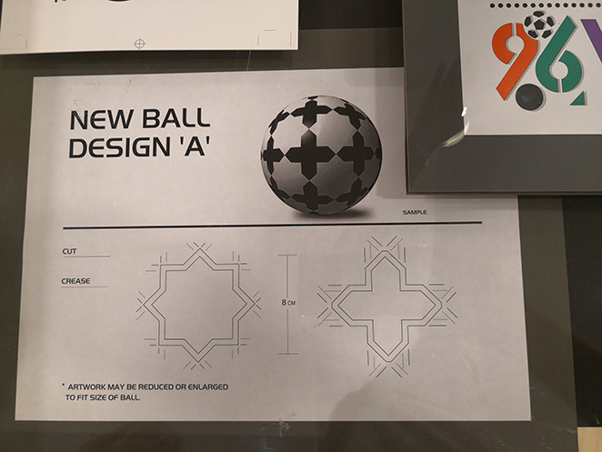

Designing an original pattern for a football is quite a challenge. The distinctive way in which hexagons and pentagons fit together to create a spherical surface makes very hard to sketch and prototype on a 2D surface. In the example shown in the photo we see a design prototype created by one of the pioneers of Graphic Design in the UAE in the 80’s, Hisham Al Madhloum, at the time when the UAE pitched to host the FIFA world cup.
 Retrospectively we think he should be very happy that his design did not make the cut. Had it be chosen, he should had then faced the hard geometrical fact that such a pattern is impossible to be adapted to a sphere (no spherical polyhedron can be tiled by perfect squares.)
The digital rendering of the proposed football with the shadow applied to create the illusion of a sphere is promising the impossible.